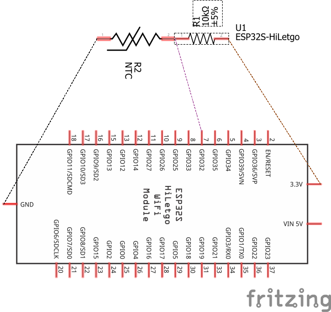

Presentation
Digital Write
Use the following code to activate LED pin.
Download codeint LED_pin = 13;
// the setup function runs once when you press reset or power the board
void setup() {
// initialize digital pin LED_pin as an output.
pinMode(LED_pin, OUTPUT);
}
// the loop function runs over and over again forever
void loop() {
digitalWrite(LED_pin, HIGH); // turn the LED on (HIGH is the voltage level)
delay(1000); // wait for a second
digitalWrite(LED_pin, LOW); // turn the LED off by making the voltage LOW
delay(1000); // wait for a second
}PWM with ESP32
Pulse-width modulation (PWM) is a method of controlling the average power delivered by an electrical signal. The average value of voltage (and current) fed to the load is controlled by switching the supply between 0 and 100% at a rate faster than it takes the load to change significantly. PWM is a technique for getting analog results with digital means. Digital control is used to create a square wave, a signal switched between on and off. This on-off pattern can simulate voltages in between the full Vcc of the board and off by changing the portion of time the signal spends on versus the time that the signal spends off. PWM is used in many applications such as controlling motor speed, heat output of heaters and variable speed fan controllers.

Use the following code to activate LED pin with PWM.
Download code// the number of the LED pin
const int ledPin = 13; // 13 corresponds to GPIO13
// setting PWM properties
const int freq = 5000;
const int ledChannel = 0;
const int resolution = 8;
void setup(){
// configure LED PWM functionalitites
ledcSetup(ledChannel, freq, resolution);
// attach the channel to the GPIO to be controlled
ledcAttachPin(ledPin, ledChannel);
}
void loop(){
// increase the LED brightness
for(int dutyCycle = 0; dutyCycle <= 255; dutyCycle++){
// changing the LED brightness with PWM
ledcWrite(ledChannel, dutyCycle);
delay(15);
}
// decrease the LED brightness
for(int dutyCycle = 255; dutyCycle >= 0; dutyCycle--){
// changing the LED brightness with PWM
ledcWrite(ledChannel, dutyCycle);
delay(15);
}
}Reading an Analog Pin
Use the following code to read an analog pin.
Download codeADC to voltage
Use the following code to convert ADC reading to voltage.
Download codeint analog_pin = 32; // Pin into which we connect the input voltage
int val ; // variable to store the value read
float voltage;
void setup() {
Serial.begin(9600); //
}
void loop() {
val = analogRead(analog_pin); // read the input pin
voltage = (3.3/4095)*val; // convert to voltage according to ADC
Serial.print("Voltage: ");
Serial.print(voltage); // print value
Serial.println(" V");
delay(100);
}Potentiometer and PWM
Use the following code to control PWM with potentiometer and dim the LED.
Download code// the number of the LED pin
const int ledPin = 13; // 13 corresponds to GPIO13
int analog_pin = 32; // Pin into which we connect the input voltage
int val ; // variable to store the value read
// setting PWM properties
const int freq = 5000;
const int ledChannel = 0;
const int resolution = 12;
void setup(){
Serial.begin(9600);
// configure LED PWM functionalitites
ledcSetup(ledChannel, freq, resolution);
// attach the channel to the GPIO to be controlled
ledcAttachPin(ledPin, ledChannel);
}
void loop(){
val = analogRead(analog_pin); // read the input pin
Serial.println(val); // print value
ledcWrite(ledChannel, val);
delay(15);
}Thermistor
Download code// Thermistor
// reading the temperature via the ESP32's ADC
int analog_pin = 32; // Pin into which we connect the input voltage
int val ; // variable to store the value read
float v2; // variable to store the voltage of v2
int r1 = 10000; // R1 value (in the voltage divider)
float v1 = 3.3; // V1 value
int b_val = 4150; // B value of the resistor (from the data sheet)
float r2; // variable to store the resistance of r2 (thermistor resistance)
float t; // variable to store the temperature
int adc_steps = 4095; // the number of increments our ADC has (ESP32 = 12bit)
float r_25 = 10000; // the thermistor resistance at 25C (from the data sheet)
// function to convert resistance to temperature according to the b value
// equation in this link:
// https://www.thinksrs.com/downloads/programs/therm%20calc/ntccalibrator/ntccalculator.html
float resistance_to_temperature(int b, float r, float r_25) {
return b/(log(r/r_25)+(b/298.15))-273.15;
}
void setup() {
Serial.begin(9600); //
}
void loop() {
val = analogRead(analog_pin); // read the input pin (reading v2)
v2 = (v1/adc_steps)*val; // convert to voltage of v2 according to ADC
r2 = (v2*r1)/(v1-v2);
t = resistance_to_temperature(b_val, r2, r_25);
Serial.print("Temperature: ");
Serial.print(t); // print temperature
Serial.println(" C");
delay(100);
}